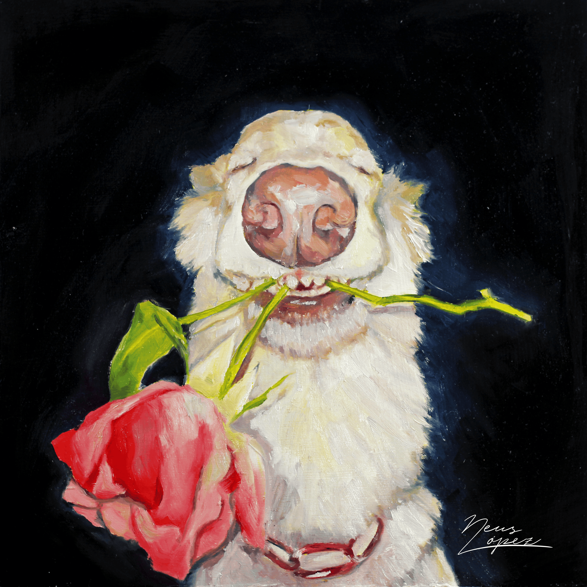
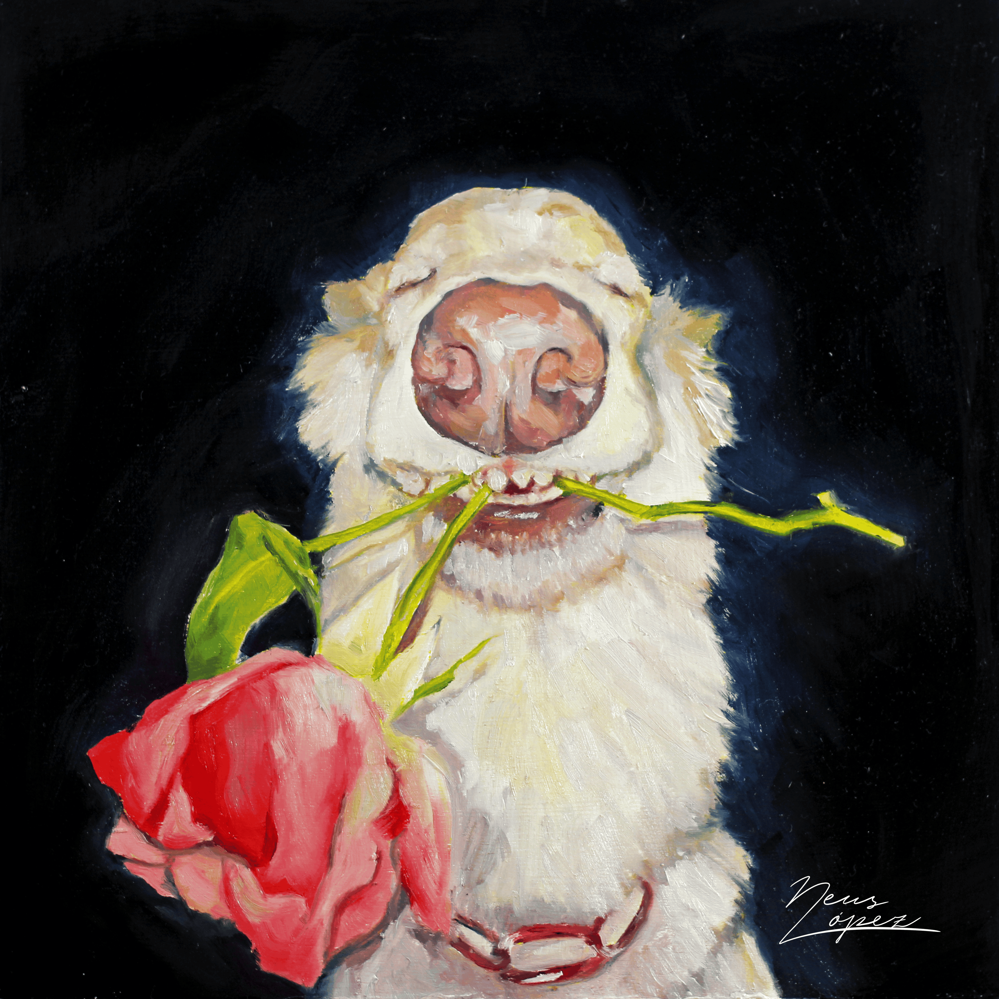
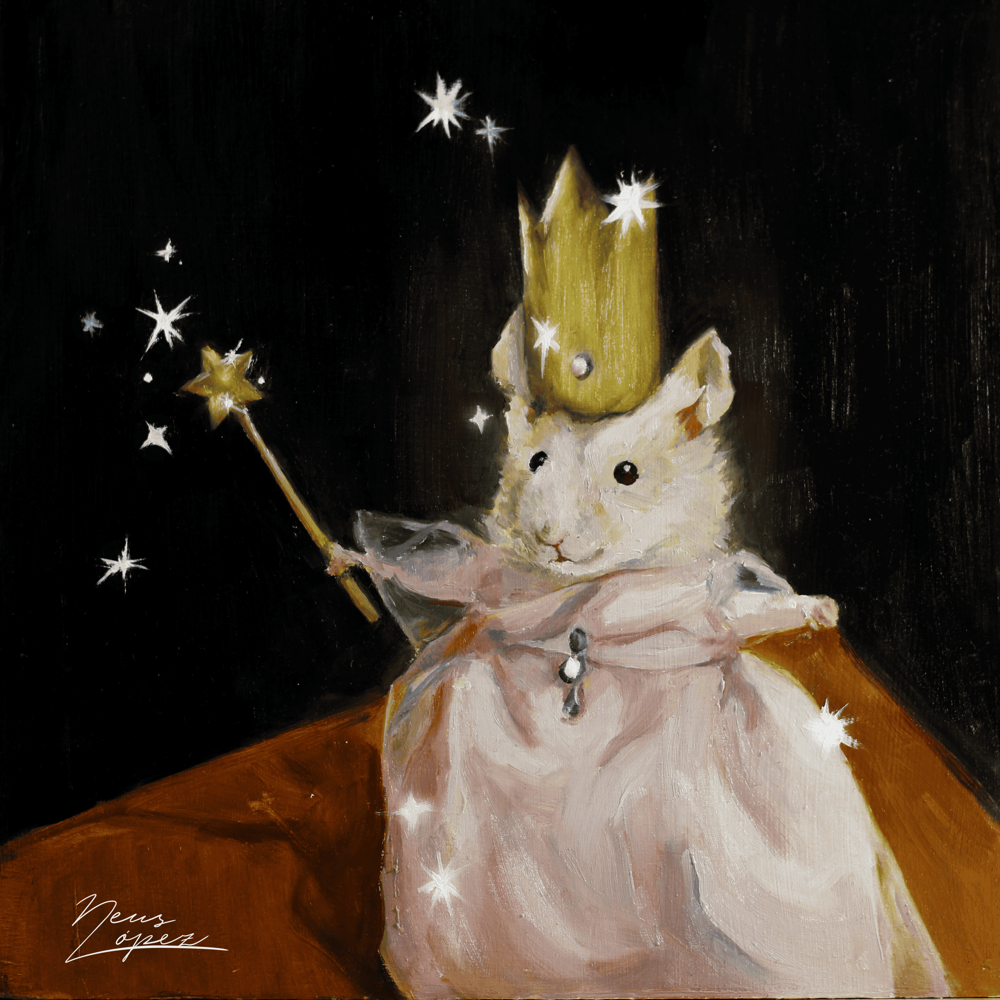
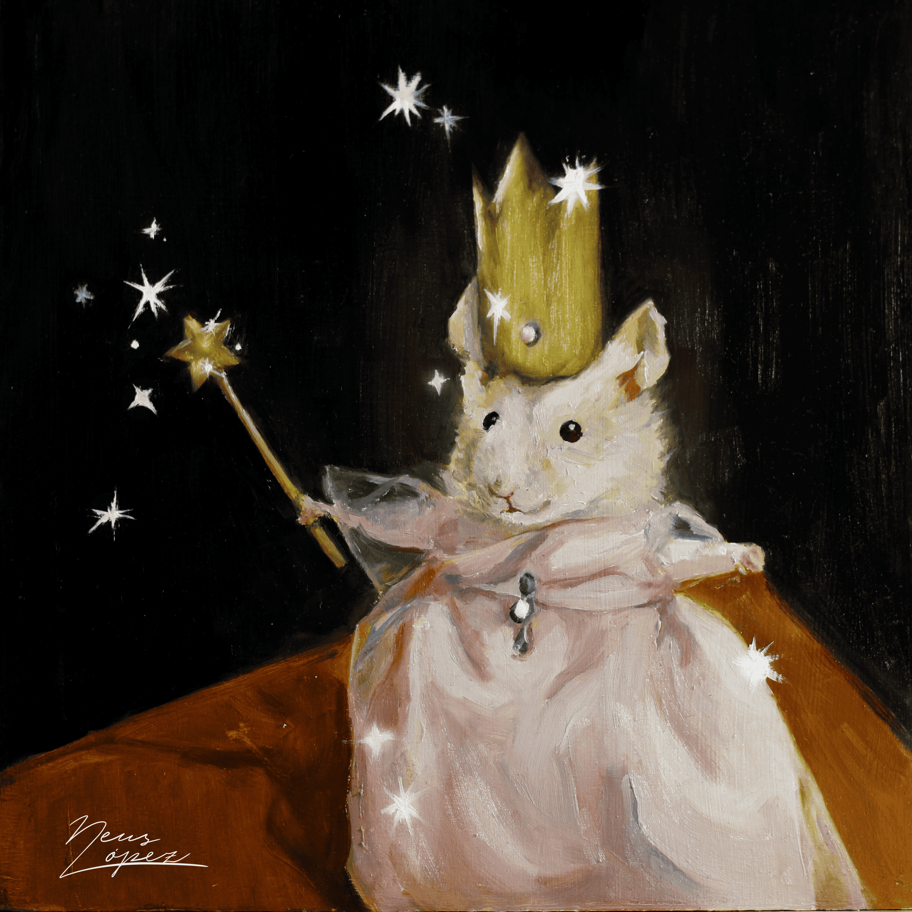

Obras:
Serie: Cicatrices de memoria
La memoria vuelve el tiempo tangible, nos permite convertir en recuerdos y almacenar momentos, emociones y personas. La mente actúa como guardiana de lo vivido, aunque también olvida y reinterpreta. Traza entonces una narrativa personal sobre la que construimos nuestra identidad, conectado lo que somos con lo que fuimos, en un delicado equilibrio entre lo recordado, lo olvidado y lo soñado.
Para esta serie he utilizado pintura, collage y xilografía. Indagando en el concepto de la identidad mediante fragmentos donde las experiencias se entrelazan a lo largo del tiempo. A veces de forma clara y otras difusa, capturando la fragilidad de la memoria y la distorsión que provoca el tiempo, reflexionando sobre lo objetivo y lo adquirido.
Serie: La memoria no es un espejo
“La memoria no es un espejo” nace de una necesidad vital: entender quién soy a través de los fragmentos que el tiempo ha dejado en mí. Como artista, he centrado mi práctica en explorar cómo los recuerdos, a menudo ambiguos o reinventados, configuran la identidad. La memoria, más que un archivo, es una construcción activa.
Este proyecto es, por tanto, un intento de darle forma a lo intangible, utilizando lenguajes visuales que me permiten capturar lo borroso, lo ausente y lo transformado.
(Próximamente)
Serie: Memes de internet
¿Qué ocurre cuando lo serio del arte se encuentra con el humor de internet? En esta serie de cuadros inspirados en los memes de los animales más populares de internet busco mezclar ambos mundos. Cada obra captura la esencia divertida y única de estos adorables y graciosos animales, transformados en cuadros al óleo llenos de color y personalidad.

 

 

Otras obras:

Acuarelas
Bienvenido a un espacio donde los paisajes cobran vida a través del arte de la acuarela. En mis acuarelas, te invito a explorar diversas series inspiradas en pueblos y rincones llenos de historia, color y encanto. Cada pincelada está pensada para capturar la esencia única de cada lugar, invitándote a soñar y a viajar con la mirada.